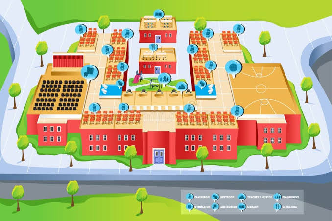
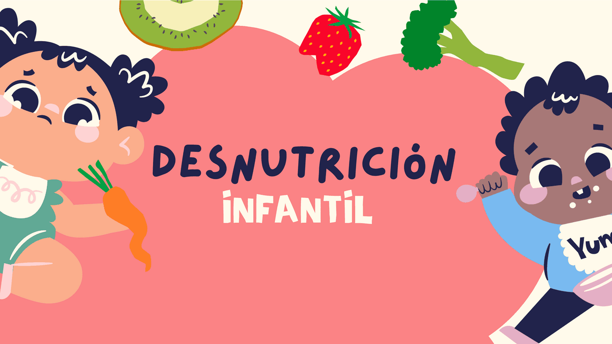

Hola, soy
Hernán Alfredo Sarango Noboa
Estudiante de Ingeniería en Software
Ciberseguridad | Desarrollo Web | Bases de Datos
Apasionado por desarrollar soluciones tecnológicas seguras, eficientes e innovadoras.
Ver proyectos ContactarmeHola, soy
Ciberseguridad | Desarrollo Web | Bases de Datos
Apasionado por desarrollar soluciones tecnológicas seguras, eficientes e innovadoras.
Ver proyectos ContactarmeSoy estudiante de octavo semestre de Ingeniería en Software, con interés en desarrollo web, seguridad informática, bases de datos y creación de soluciones digitales.
Mi objetivo profesional es participar en proyectos tecnológicos aplicando buenas prácticas de programación, seguridad y arquitectura de software.
Ingeniería en Software
Octavo semestre
Ciberseguridad
Desarrollo Web
Bases de Datos
Crear software seguro y escalable.
HTML5, CSS3, JavaScript, Python y Django.
PostgreSQL, SQLite, MySQL y DBeaver.
Arduino, C++, DFPlayer, Tinkercad y Fritzing.
Buenas prácticas, autenticación y seguridad informática.

Problema: Optimizar la gestión de información médica, usuarios y procesos administrativos mediante una solución digital.
Sistema web desarrollado para administrar procesos médicos, usuarios y servicios relacionados con atención médica.

Problema: Crear una herramienta tecnológica que facilite la accesibilidad educativa para personas con discapacidad visual.
Prototipo basado en Arduino que integra un mapa físico, botones interactivos y reproducción de audio.

Problema: Apoyar el análisis y seguimiento de indicadores relacionados con nutrición infantil.
Plataforma web orientada al análisis nutricional infantil y gestión de información mediante herramientas digitales.
Primary
#38BDF8
Secondary
#A78BFA
Background
#020617
Surface
#0F172A
Text
#F8FAFC
Texto principal utilizado para mostrar información dentro del portafolio.
Enlace ejemploComponente utilizado para mostrar proyectos destacados.